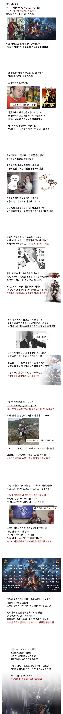

163 · 6 · 3 시간 전 · 원문

수집 당시 댓글 6개
팡팡팡팡팡팡 · 1 시간 전
난 발더스3 하다 중간에 꺾여서 엔딩은 못봤는데진행할때마다 걍 이거 만든새끼들 미친새끼들인가 싶긴 했음존경심이 자연스럽게 생기게 되는 겜
ravvit · 57 분 전
미호요도 원신까지 이런 느낌이긴 했지
멧금돼지 · 45 분 전
한번 미끄러지면 뒤지는 길을 성공으로 막고 있어...
PurpleHaze · 24 분 전
역시 겜은 취향인듯.. 10분해보고 잼없어서 바로 손절했는데
아무것도아닌 · 9 분 전
아 이거 해야하는데 시발 재밌다 재밌다 하니까 하긴 해야하는데
뉴비곰 · 방금 전
발더스게이트 설정이나 그런것은 막 흥미롭고 그런데 막상해보니까 솔직히 좀 난이도가 높다고해야하나 어렵다고해야하나 게임하는게 쉽지가 않았음.
난 발더스3 하다 중간에 꺾여서 엔딩은 못봤는데
진행할때마다 걍 이거 만든새끼들 미친새끼들인가 싶긴 했음
존경심이 자연스럽게 생기게 되는 겜